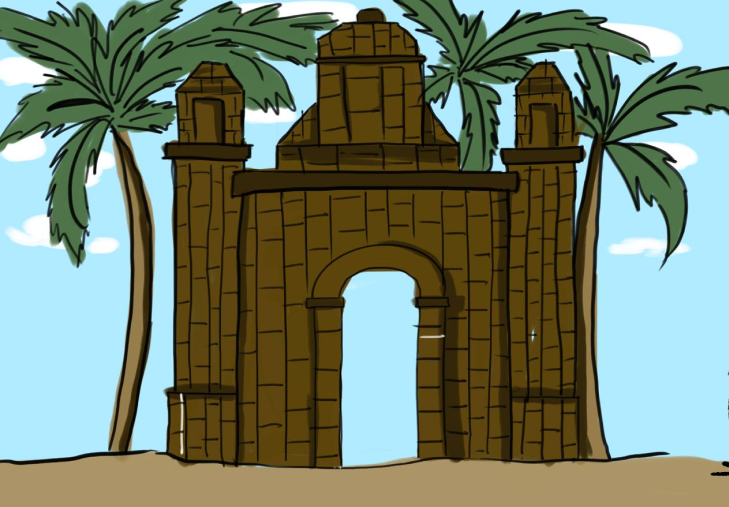
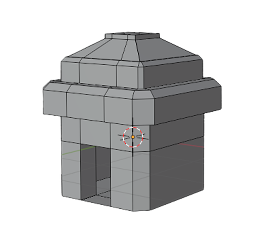
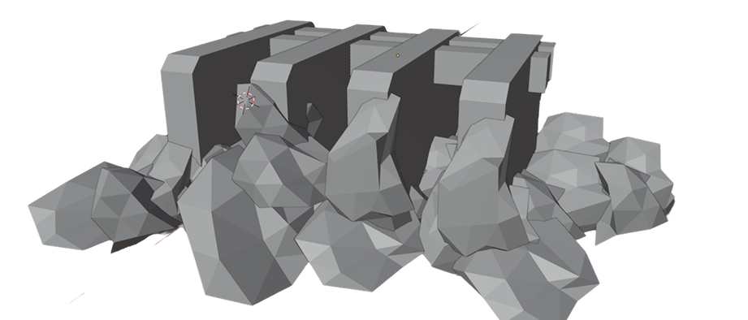
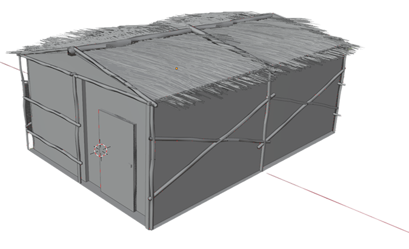
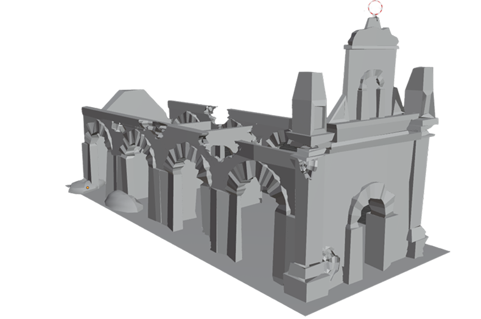
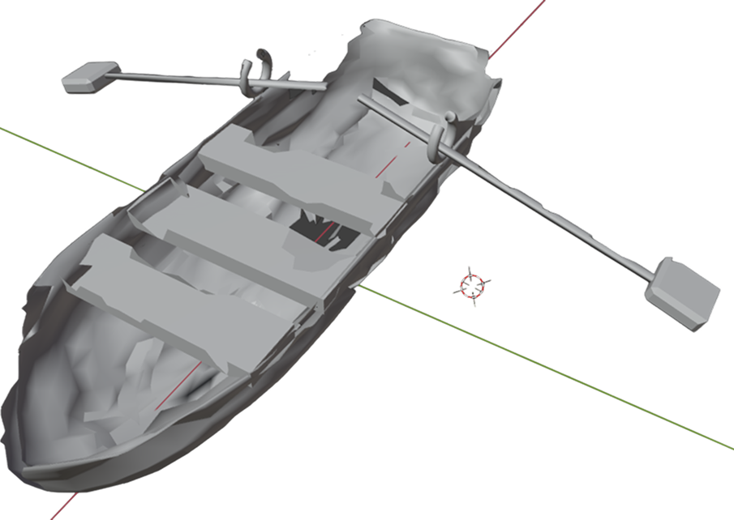
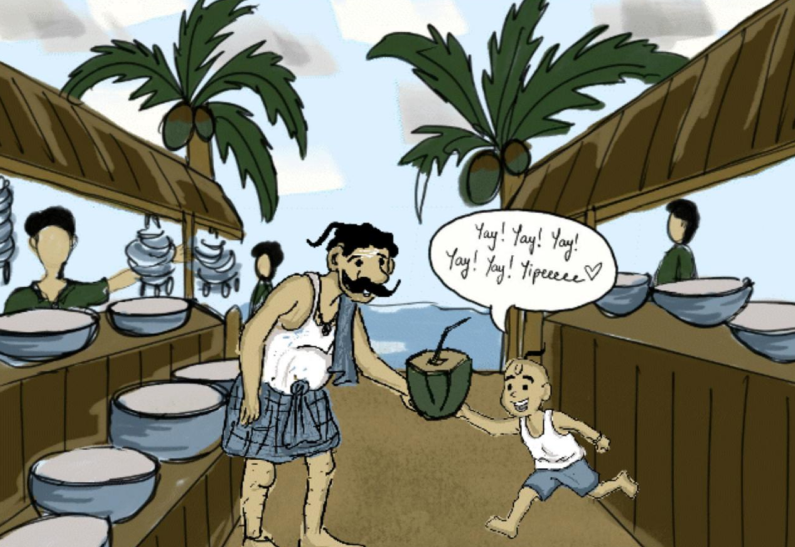
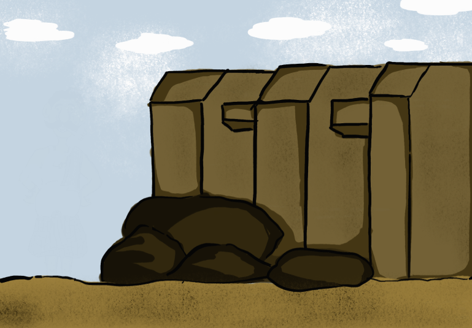
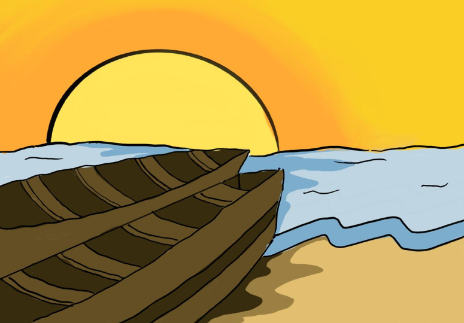

The Church
Young Arun used to go to the church with his dad who was the stereotypical tamil dad with strict principles yet simple innocence. He used to ask him silly curious questions and his father answered everything.

Church
What if you could walk through a town the sea took back and bring its memories to life with your hands?

Dhanushkodi is one of the southernmost towns in India which was a thriving marketplace but was destroyed by a cyclone which hit in 1964 and later declared a ghost town making opportunity for a lot of stories, religious importance and myths about the place.
How can we acknowledge, witness and communicate the intangible memories of a vanished site?
The role of the player was of an archaeologist from the government survey of India.
Had a film camera clicking photographs interaction where the user documented the VR world.
Had important spaces of community interactions in the VR world which helped user know more about the place ‘Dhanushkodi’.
The role of the player was of an archaeologist from the government survey of India.
Had a film camera clicking photographs interaction where the user documented the VR world.
Had important spaces of community interactions in the VR world which helped user know more about the place ‘Dhanushkodi’.
The main protagonist Arun is a 41 year old Archaeologist.
He revives and witnesses some memories of his with his father who died during the cyclone.
His visits to specific places triggers memories and forces the user into thought about how the protagonist’s life might have been before all these years.

Asset 1
Asset 2
Asset 3
Asset 4
Asset 5Visuals of ruined Dhanushkodi and recreated scenes of the town before the cyclone help users see the contrast between past and present.
Gesture-based controls allow users to use hand movements to explore the space and reveal hidden memories, making the experience more engaging.
Ambient sounds like sea waves, wind, footsteps, conversations storm effects create an emotional and realistic atmosphere.
Sensory photographs such as sea breeze, wet sand and enhance the coastal environment and make users feel more present in the setting.
 VR experience image
VR experience image
We have 4 main locations in our VR environment – Church, Stone bridge, Boats, Market so, understanding the importance of these places, we weaved a storyline around the locations which would give the player a better insight into the life of the protagonist.
Young Arun used to go to the church with his dad who was the stereotypical tamil dad with strict principles yet simple innocence. He used to ask him silly curious questions and his father answered everything.

ChurchHe used to whine for things to be bought which his mom denied but his father secretly bought it for him, becoming his favorite friend.

MarketHere Arun learned the seashell game and learn about philosophies running in his family from the time of his ancestors.

Stone bridgeArun hid among the boats and his father used to come and find him there where he taught him some principles of life which he did not forget even after he grew up.

BoatsThe artstyle and the colour scheme of the animation is inspired from the cartoon of Malgudi Days because we wanted to keep the roots and theme of the project alive with the video played as well so that the story is interesting and easier to understand from the user’s perspective.
Created an emotional connection with Dhanushkodi’s lost heritage
Increased immersion through multisensory storytelling and interaction
Made cultural preservation more engaging using VR and gesture-based interaction
Helped users experience history instead of just learning about it
Encouraged empathy and curiosity toward forgotten places and cultures